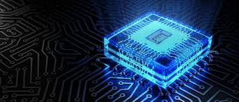
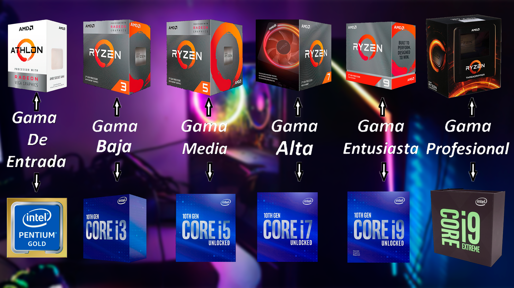
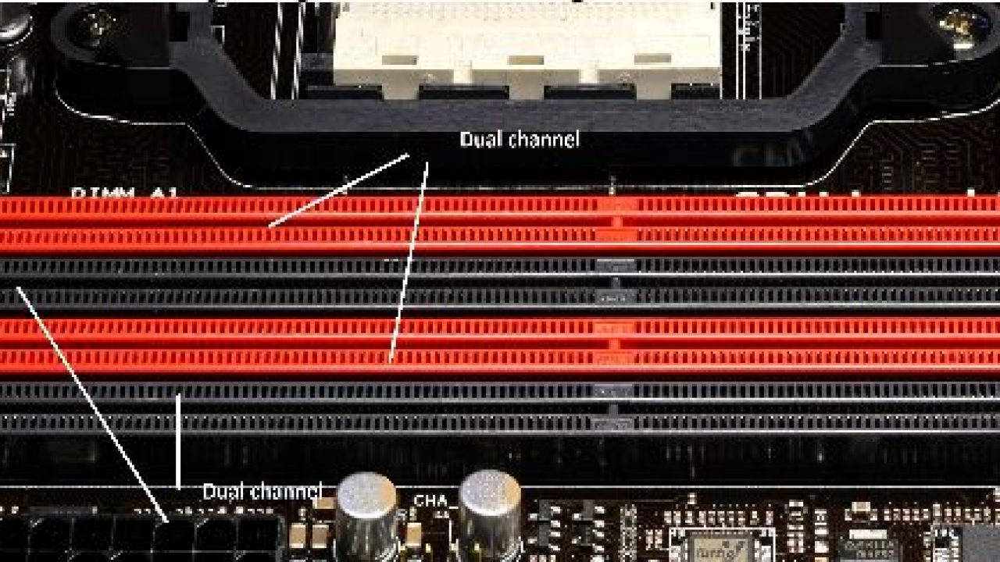
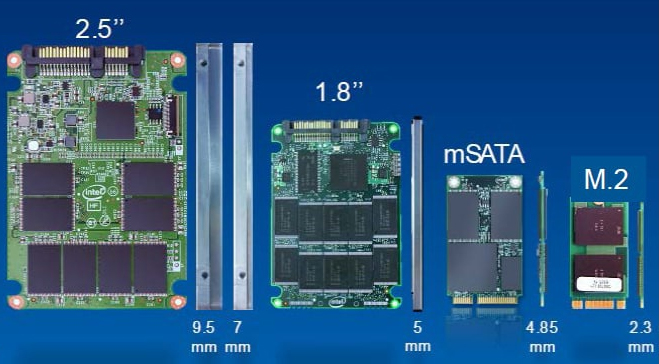

Procesador
Es la unidad de procesamiento encargada de interpretar las instrucciones de un hardware, haciendo uso de distintas operaciones aritméticas y matemáticas.
- Frecuencia de reloj. Es un valor que se mide en Mhz o Ghz y es básicamente la cantidad de potencia que alberga la CPU.
- Consumo energético Es normal que nos encontremos con CPU 's donde su consumo energético varíe notablemente. Es un valor que se muestra en vatios (W)
- Numero de núcleos Si lo vais a usar únicamente para tareas de ofimática, con una CPU de uno o dos núcleos será más que suficiente. Aunque si ya queréis hacer streaming, jugar o llevar a cabo labores de edición, necesitaréis al menos cuatro.
- Zócalo tipo de conector con pines o socket al que debéis conectar a vuestra placa base. Intel suelen tener el socket LGA 1200, mientras que las de AMD con Ryzen son AM4.
- Número de hilos Dentro de cada núcleo puede existir un hilo o core virtual, tienen como objetivo llevar a cabo otros procesos más pesados sin que el rendimiento se vea afectado.
- Memoria caché. sirve para recordar tareas al igual que la ram. Se caracteriza porque se llega a ella de forma más rápida y puede ser tipo L1, L2 y L3.
AMD o INTEL
Los procesadores de AMD e Intel que debemos conocer son los siguientes
- AMD Athlon e Intel Pentium: son procesadores básicos de dos y cuatro núcleos en algunos Modelos nuevos. Son los más baratos de los fabricantes y muy válidos para montar equipos multimedia, ya que cuenta con GPU incorporada y son capaces de reproducir contenido en 4K a 60 Hz
- Intel Core i3 y AMD Ryzen 3: entramos ya en los procesadores potentes de escritorio de ambos fabricantes. Tenemos chips de cuatro núcleos con mayor potencia y capacidad que los anteriores, y muy recomendable para equipos de ofimática y de propósito general económicos.
- AMD Ryzen 5 e Intel Core i5: estos procesadores elevan sus prestaciones a chips de 6 núcleos y 6 o 12 hilos de procesamiento. Están disponibles en equipos gaming de gama media y alta y son la compra inteligente, ya que aúnan un precio bastante asequible y una gran capacidad multitarea para gaming, diseño o profesionales. Son, de lejos, los más recomendables.
- AMD Ryzen 7, Intel Core i7 y Core i9: estos son los procesadores más potentes de escritorio de cada fabricante. Son chips de 8 núcleos y 8 o 16 hilos de procesamiento, para equipos gaming de gama alta y diseñadores y profesionales que necesitan gran capacidad de procesamiento.
- Intel Core i7/i9X y AMD Threadripper: Son los procesadores destinados a Workstation, bestias de 18 núcleos en el caso de Intel y de 32 núcleos en el caso de AMD. Están destinados a tareas de diseño, renderizado, composición y modelado de alto rendimiento, aunque también podremos jugar con ellos, qué duda cabe.
Hay que tener en cuenta que hay una gran diferencia de rendimiento entre un procesador de muchos nucleos de una generación antigua con uno de menores núcleos de una generación mas actual. El número de nucleos será importante para lo que vayamos a querer usar ya que cuando se trata de juegos, importa más el rendimiento de un solo core que el número de éstos
Memoria RAM

Las siglas RAM significan en el inglés Random Access Memory o memoria de acceso aleatorio.
La función de la memoria RAM es la de cargar todas las instrucciones que se ejecutan en el procesador. Estas instrucciones provienen del sistema operativo, dispositivos de entrada y salida, discos duros y todo lo que está instalado en el equipo.
Según su encapsulado puede ser:
- DIMM: usual en pcs de sobremesa
- SO-DIMM: se suele usar en miniPCs o portátiles
Según su velocidad puede ser de 1600MHz a 4600MHz
Latencia: tiempo que transcurre entre una ‘petición’ y su respuesta, a menor latencia mejor.
Numero de canales: El conocido channel que tiene su nombre del numero de modulos que introduces en los canales. Ultimamente se recomienda mas dual-channel que quad-channel

DDR, DDR2, DDR3 y DDR4: A partir de ese momento, era posible enviar una nueva tarea aunque la anterior no se hubiera finalizado (escrito),
acelerando el proceso al tener una sincronía total con el resto del equipo.
La llegada de la DDR supone que si antes se podía enviar una tarea por cada ciclo de reloj,
ahora se podían enviar dos, doblando el ancho de banda disponible.
Placa Base
La placa base es, como su nombre indica, el núcleo de todo equipo. Dependiendo del factor de forma y nuestros requisitos, contará con diferentes conexiones y ranuras de expansión en las que ensamblaremos el resto de componentes.
Factor de forma: ATX, Extended ATX, micro ATX y mini ITX

deberemos fijarnos tambien en el tipo de socket, ya que dentro de intel y AMD existen diferentes tipos.
Tarjeta Gráfica
Una tarjeta gráfica es el elemento del pc que se encarga del procesado de gráficos.
Al fin y al cabo las tarjetas gráficas son placas bases conectados a un puerto pci express que tienen un procesador y una memoria dedicada a una tarea mas concreta como es el caso de el procesado de gráficos.
Tarjetas gráficas AMD
Tarjetas gráficas Nvidia
Tarjetas Auxiliares

Las placas bases traen incorporadas tarjetas de sonido, en algunos casos incluso soluciones 5.1 y 7.1, pero ni de lejos alcanzan la calidad y fidelidad de sonido que provee una tarjeta de sonido o tarjeta de sonido USB.

Las placas bases disponen de sus propias conexiones de red, pero en determinados casos, puede ser necesario recurrir a soluciones más potentes y profesionales. Por ello, la mejor opción es comprar una tarjeta de red WiFi o LAN.
Almacenamiento
El disco duro es uno de los elementos centrales de nuestro ordenador. Indistintamente de si es sobremesa o portátil, todos los ordenadores disponen de al menos un disco duro o de almacenamiento, puesto que los SSD, mal llamados discos duros SSD, también son dispositivos de almacenamiento pero no son un disco duro tradicional.
Diferencias Entre SSD y HDD: Al margen de la estructura y la fabricación, en el plano técnico la diferencia más importante, y la que está haciendo que cada vez haya más unidades de estado sólido es que disponen de una tasa de lectura y escritura endiabladamente altas que llegan a superar los varios gigabytes por segundo. Además, al ser una unidad sólida, como su nombre indica, un SSD es mucho más resistente que su homónimo tradicional ante un golpe, caída o vibración, ya que no dispone de piezas móviles que puedan descolocarse o sufrir por el uso.
Fuente alimentación
La fuente de alimentación es el componente encargado de suministrar energía al resto de componentes del PC. Tipos de fuentes de alimentación: modulares y semimodulares Una vez seleccionada la potencia, podemos elegir entre fuentes de alimentación estándar, modulares o semi-modulares. La diferencia entre los distintos tipos de fuente radica en el cableado. Mientras que las estándar disponen de todo el cableado preinstalado y listo para utilizarse, una fuente modular cuenta con distintas entradas para que tú conectes únicamente los cables que necesites, permitiéndote así una personalización mayor y evitando el exceso de cables en tu PC. Las fuentes de alimentación semi-modular es una combinación de los modelos anteriores que fusiona los conceptos y nos ofrece un cableado mínimo para los componentes básicos y la conexiones en la fuente donde acoplar nuevos cables en caso de que necesitemos añadir componentes extra. Certificación 80 Plus: Bronze, Silver, Gold, Patinum y Titanium La forma de controlar que la potencia indicada en una fuente de alimentación para PC es correcta, es cumpliendo con los requisitos del certificado 80 Plus. La certificación 80 Plus es un programa que promueve el uso eficiente de la energía en las PSU.